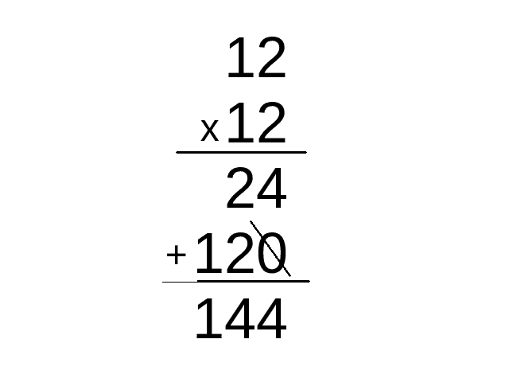

-
Introduction
It's easy to teach how the long multiplication system works. But as easy as it is, none of my teachers from elementary school ever taught me how. Maybe they also never knew how it worked or deemed it unnecessary. Whichever it was, it would be great if everyone knew how it did. As some Indian guy said, "Be the change you wish to see in the world." In this article, you will see how long multiplication works and how to teach it.
-
Digits After a Decimal Point
Before we start, it is necessary to remember that decimal points function like ordinary digits. They're just after a dot. The most important part about them is remembering where the decimal point should be. This detail is why 1.22 is 1.44 and 122 is 144.
-
How Carrying Works
When adding or multiplying, we often get a number higher than 9. Of course, this gives us a two-digit number, which we can not add to the digit in the ones' place due to our number system's limitations.
Due to that, you cannot add it to the ones' place. Conveniently, however, the number at the tens place of the answer can take that number because the excess digit is in the tens place.
-
The Main Part: Multiplication
I once forgot the system's direction whenever I multiplied with a two-digit multiplier. I once felt embarrassed as I needed to look it up. But when I realized how it worked, I was never confused again.
As you can see in the image below, there's a hidden zero never written down, similar to how some people do not write down the preceding zero in division.
When we don't write out the zeroes, it gives the illusion that it goes to the left.
But let's address the elephant in the room. Why do we add a zero in the first place? The following image illustrates it well.
As you can see, we split them up by ones, tens, hundreds, etc., and add them all afterward. It shows how simple the system is. It uses basic mathematical concepts that you may have learned in 1st grade.
-
Finishing words
We should teach these not as a set of rules but for what it is. If you ignore the words, it only took two images to show how multiplication works, which says a lot. I think teachers should spend a mere 20 minutes at most explaining how it works. That alone is enough.
It may be beautiful, but it's not the best we can do. If you've ever heard of the Trachtenberg system for multiplication, you'll see how much simpler it is. You may also value the complex tricks used in Vedic maths that the ancient Indians made. I believe our education systems should give those a try. They're easier to calculate mentally, too. I may discuss those in the future if I feel like it.